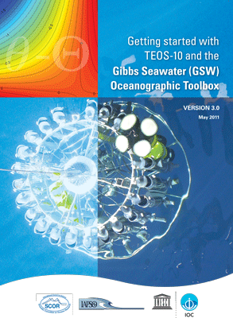

Getting Started
Preamble
Installing the GSW Oceanographic Toolbox in MATLAB
Absolute Salinity (SA)
Preformed Salinity (Sstar)
Conservative Temperature (CT)
Which types of salinty and termperature should be archived
The 75-term expression for specific volume
Changes to oceanographic practice under TEOS-10
Ocean modelling using TEOS-10
A guide to the GSW Oceanographic Toolbox
References
Recommended nomenclature, symbols and units in oceanography
GSW Toolbox functions
GSW Toolbox functions (Printable pdf)
GSW in a nutshell
